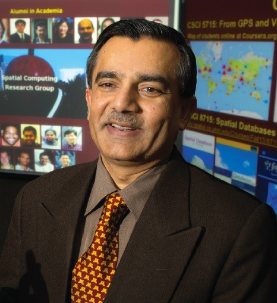

Keynote Speakers

Dr. Shashi Shekhar
TALK: From GPS, Google Maps & Uber to Spatial Computing
ABSTRACT: Spatial computing and spatial big data have already enriched billions of lives via pervasive services (e.g., navigation and ride-sharing apps), ubiquitous systems (e.g., geographical information system, spatial database management system), and pioneering scientific methods (e.g., spatial statistics). With 2 billion receivers in use for location and time services, the GPS has become a critical infrastructure for the world economy for use cases ranging from precision agriculture to navigation to ride sharing to smart cities. Government and industry have recently started major initiatives such as NASA Earth Exchange, Amazon Earth on AWS, Google Earth Engine, Microsoft AI for Earth, and NSF Navigating the New Arctic for meeting grand challenges facing our changing planet such as climate change and environmental sustainability. However, many spatial data science questions need to be probed to realize the transformative potential. For example, how may modern economy survive wide-spread GPS-jamming (or spoofing)? How may one continuously monitor our changing planet at high spatial resolution even during nights? How may spatial big data (e.g., smart-phone trajectories) be mined without violating privacy ? How may machine learning methods be generalized to address spatial challenges (e.g., auto-correlation, multi-scale, modifiable areal unit problem such as Gerrymandering)? How may we address spatial bias in data even when social feedback loops increase it? How may algorithms scale up to spatial big data to learn unbiased models? How may we leverage vehicle big data (e.g., on-board diagnostics with high spatio-temporal resolution) for eco-routing to model edge dependence of energy-use and emissions? This presentation shares a perspective on the societal accomplishments, opportunities, and research needs in spatial computing, spatial big data and spatial data science.
BIO: Shashi Shekhar , a McKnight Distinguished University Professor at the University of Minnesota, is a leading scholar in Geographic Information Systems (GIS). He co-edited an Encyclopedia of GIS and co-authored a Spatial Databases textbook. He received the IEEE-CS Technical Achievement Award, the UCGIS Education Award and was elected a Fellow of the IEEE and the AAAS. Shashi is a co-Editor-in-Chief of Geo-Informatica journal (Springer) and has served on the Computing Community Consortium Council, National Academies' committees (Mapping Sciences, GEOINT Workforce). He co-organized the "From GPS and Virtual Globes to Spatial Computing 2020" workshop to catalyze community research visions.
Dr. Elizabeth Chang
TALK: Enterprise on Blockchain, let you big data sing
ABSTRACT: This keynote gives an overview of 3 core components of Big data analytics, namely frontier AI enabled structured, semi and unstructured big data screening, reasoning and predictive analytics, known as applications; heterogenous data source integration known as backend or clouds; and data representation, visualisation and user interaction known as front-end. There is a world-wide effort for solution development on how to utilization of Blockchain for back-end enterprise databases modernization including distributed trust, single south of truth, transparency, immutability, traceability and anonymity etc. In addition, how to produce low-cost yet high dynamic systems that utilise variety of open source AI components for data intelligence and how to move the UX to mobile enabled platforms rather than back-office. To date, there has been no ready used solutions for large corporate and enterprises.
This talk presents two real world project experiences and the issues and challenges facing to the adoption of the disruptive technology like Blockchain in the large corporate or private enterprises, where 1000-10,000 + legacy system co-exists and how blockchain can be integrated in such a complex and continue evolving environment. Particularly we present our patented work on Blockchain enabled big data analytics, data migration, data lake, combined with AI and open source technologies.
This keynote also presents the technical issues of Blockchain including Blockchain ecosystems with legacy ERPs, real time performance of Blockchain, data lake on Blockchain, data integration and analytics between multi-Blockchains, private keys and certificates for multi-channel private Blockchains, and limitations of standards and policy. We provide possible solutions including Blockchain configuration, plug n play Blockchain, enterprise private and public Blockchains, network of partners, speed, space and security, building trusted data sources for visibility, transparency, immutability, accountability, and enablement of productivity, efficiency and effectiveness.
BIO: Professor Elizabeth Chang is Professor of Logistics and Canberra Fellow at UNSW at Australian Defence Force Academy (ADFA). Professor Chang leads the Defence Logistics research group at UNSW Canberra, targeting the key issues in Logistics ICT, Defence Logistics and Sustainment, Big Data Management, Predictive Analytics, IoT and Cyber-Physical Systems, Trust, Security, Risk and Privacy.
She has delivered over 50 Keynote/Plenary speeches largely at major IEEE Conferences and most recently in the areas of Semantics, Business Intelligence, Big Data Management, Data Quality and the like. Her academic achievement includes 24 Competitive Research Grants, including 12 Australian Research Council (ARC) Grants worth over $15 million. She has supervised/co-supervised 42 PhD theses to completion, 21 Master theses and 16 Post-docs. She has published 7 authored books, over 500 international journal papers and conference papers with an H-Index of 47 (Google Scholar) and over 12,000 citations.
Dr. R. K. Agrawal
TALK: Deep Learning Models for Medical Image Analysis: Challenges and Future Directions
ABSTRACT: Medical imaging modalities such as X-rays, CT scan, ultrasound, magnetic resonance imaging, functional magnetic resonance imaging (fMRI) exist to measure physical property of the human body. These modalities have raised the capabilities of clinicians by providing visualization of the internal details of human body with no or minimal invasion and has thus reduced the surgical procedures. However, manual analysis of these medical images is challenging due to several reasons such as extensive medical data, the bias involved in subjective assessment by clinicians, presence of the fine details that ordinarily cannot be observed through visual inspection. Machine learning methods have been employed to analyse medical images, which supports the clinician in the diagnosis of peculiar diseases that are difficult to identify otherwise. Recently, deep learning method is proposed which has the capability to learn or extract high-level, complex abstractions to represent samples through a hierarchical learning process from training samples. The power of deep learning lies in its capacity to analyse and learn patterns from large volume of data in unsupervised manner, which can be a valuable tool for Big Data Analytics where most of the available raw data is largely unlabeled and uncategorized. Additionally, the availability of GPU allows us to analyse unprecedented amounts of data. In my talk, I will discuss state of the art deep learning models for medical image segmentation and classification for a wide variety of health application areas. Finally, the talk will also focus on current challenges and future research directions for medical image analysis.
BIO: Dr. R. K. Agrawal is Professor in the School of Computer & Systems Sciences of Jawaharlal Nehru University, New Delhi. He is presently Dean of School of Engineering and also served as Dean of School of Computer & Systems Sciences between 2015-2017. He holds M.Tech degree in computer science from IIT Delhi and a PhD from University of Delhi. His research topics include data mining, pattern recognition, machine learning and medical imaging. Dr. Agrawal is an author of more than 100 scientific publications in refereed international journals and conferences, most of them on machine learning and medical imaging related. He has served on the Steering Committees, Program Committees and organizing Committees of many international/national conferences. Dean, School of Engineering Professor, School of Computer & Systems Sciences Jawaharlal Nehru University, New Delhi